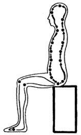

< < < Back
Need Motivation? Learn To Meditate – Return Of Kings
So you squat 355 for sets of five, have flags in over a dozen countries and have your alpha vibe down pat. Yet, something is missing. You missed closing your last couple of business deals, or the rejection letters for your writing keep piling up with ego-crushing “it’s almost there” notes.
Learn to meditate.

Meditation is not some New Age hippy trip where everyone sits around doing drugs and complaining about the man. My significant teachers included two ex-Marines, a street fighting Jewish tough guy from a bad neighborhood in Chicago, and a female Taoist adept who burned through four husbands because “they couldn’t keep up.”
What is meditation? It is a part of yogic practice whose purpose is one of two things: theurgy or thaumaturgy.
Theurgy is unification with the divine. This involves mind shattering things like experiencing states of being beyond space and time. The process of getting there will give you an iron like will and then some.
Thaumaturgy is often referred to as miracle working, or in a more modern parlance the art of getting shit done. Learning to shatter bricks with your hands, staying up for three days straight without getting tired, and generating enough body heat to melt snow while everyone around you is going hypothermic are all doable.
Granted, the expanded bubble of awareness generated by the process of getting there can save your life and is largely responsible for my having survived four wars without being shot or blown up.
Of course, the initiation rituals from the more traditional systems can be less than fun. Running for nine miles through a lightning storm in the open desert, or having one of my martial arts teachers teach me the golden bell techniques by locking me in a room and beating me senseless are things I will remember forever.
Okay, so what do real systems of meditation look like?

Kundalini awakening—this is the connection of the latent energy of the genitals to the brain, the safer systems do this in a kind of loop. This greatly enhances the durability of the physical body and endocrine system response.
Most forms of traditional martial arts use this as their power source. Training in this method allowed me to survive a 30 foot drop from a parachute canopy collapse on final. I can recommend the Kundalini Awakening Process system run by Santiago Dobles and Tao Semko.
Heart centric awakening—this uses the point in the center of the chest between the nipples and is the foundation of esoteric Mahayana Buddhism, Christianity, some schools of Hermetic practice, Judaism, and some Sufi schools. If you want to discover what universal love really feels like, this is the route to go. Linhai at Sacredjourneys.org has the most developed system for this in the United States.
Void awakening—this focuses on the throat and is the most uncommon of the four. Void based systems are primarily seen in some Taoist schools and as a subset of Vajrayana Buddhist practice.
These originated from a series of cave meditations and get very trippy very fast. I once ran into a monk who had been driven insane by this and was chained to the front door step of a temple in western China by his abbot as a warning to others. I can’t recommend a teacher at this time, but if you look hard enough you will find someone.
Out of body projection—schools too numerous to name, although it is the center piece of Theravada Buddhism, Transcendental Meditation and most of the more academic systems.
Famous practitioners of Transcendental Meditation include Clint Eastwood, Joe Namath, and Howard Stern. Transcendental Meditation reinforces the will through a process too involved to discuss here, but is good for people who are time constrained.
All of these systems take time, effort, and money to learn. Once you’ve added one of these to your skill set, learning anything else will be much easier in comparison. And the discipline you pick up along the way will take you anywhere you want go.
Read More: Why You Should Learn Latin


{kind=link}
{kind=link}